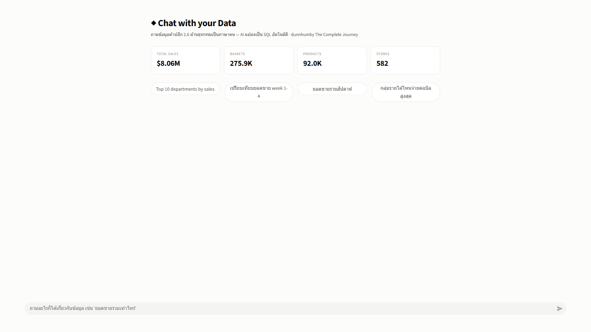
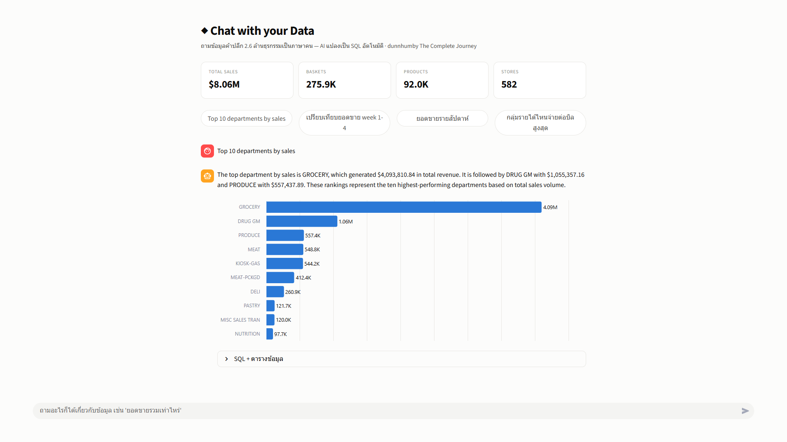
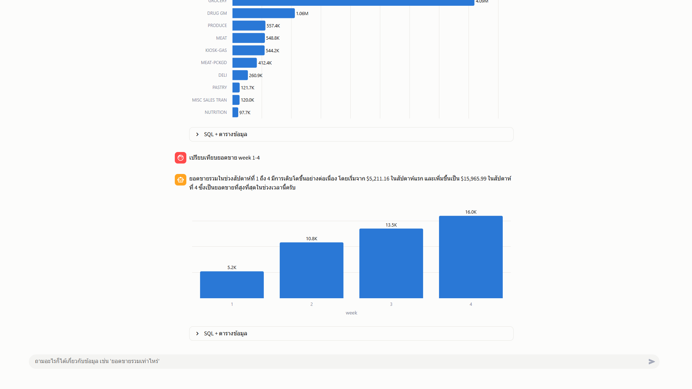

Chat with your Data — AI-Powered SQL Assistant
A natural-language interface for a 2.6M-row retail database — ask questions in plain Thai or English, and an LLM writes the SQL, runs it safely, and answers with interactive charts.
Stack: Python · Gemini API (LLM) · SQLite · Streamlit · Plotly · Prompt Engineering
1 · Introduction & Context
The business problem
In most companies, anyone who wants a number from the database must either learn SQL or file a request to the data team. Analysts spend hours answering repetitive ad-hoc questions like “what were sales last month?” — a bottleneck on both sides.
This project builds a “Chat with your Data” tool: a non-technical user types a question in plain language, and the system answers with real numbers from the database — accurately, safely, and with a chart.
🔑 Key design principle: the LLM never answers from its own knowledge. It only writes SQL; the database produces the numbers. Every answer stays grounded in real data.
Architecture
User question (Thai/English)
│
▼
[ LLM: Gemini ] ← schema context (tables, columns, caveats)
│ writes SQL
▼
[ Guardrails ] ← SELECT-only · blocked keywords · auto LIMIT
│ safe SQL
▼
[ SQLite DB ] ← 2.6M rows (dunnhumby retail data)
│ result table │ on error: send error back
▼ └→ LLM fixes its own SQL (retry)
[ LLM: explain ] → plain-language answer
│
▼
[ Streamlit UI ] → answer + interactive Plotly chart + SQL shown
2 · Data & Setup
The database reuses the cleaned dataset from my FMCG Promotion Analytics project (dunnhumby “The Complete Journey”), converted to SQLite — 3 tables designed for LLM querying with readable column names:
| Table | Rows | Grain |
|---|---|---|
sales | 2.36M | product × store × week (+ promo flags, department, brand) |
baskets | 275K | one shopping receipt |
households | 801 | demographic profile |
# parquet → SQLite with LLM-friendly names
sales.to_sql("sales", conn, if_exists="replace", index=False)
cur.execute("CREATE INDEX idx_sales_week ON sales(week)")Calling the LLM is intentionally minimal — a direct REST call, no SDK:
def ask_llm(prompt: str) -> str:
r = requests.post(URL, params={"key": API_KEY},
json={"contents": [{"parts": [{"text": prompt}]}]})
return r.json()["candidates"][0]["content"]["parts"][0]["text"]3 · The Engine
Three pieces make the difference between a demo and a trustworthy tool.
3.1 Schema context (prompt engineering)
The LLM only knows the database through the prompt. The schema description includes not just tables and columns but caveats — and the LLM applies them on its own:
Notes:
- weeks 1-8 have incomplete data (ramp-up).
- There are NO dates/months — only week numbers 1-102.
- There is NO cost or profit data.
- units for weight-based products are in grams — prefer sales ($).Result: every generated query automatically filters WHERE week > 8, and household questions correctly JOIN through the baskets table — without being asked.
3.2 Guardrails (security)
An LLM given database access must be constrained. Every generated SQL passes a safety check before execution:
def is_safe(sql: str) -> bool:
if not sql.lower().startswith(("select", "with")):
return False
forbidden = ["insert", "update", "delete", "drop",
"alter", "create", "attach", "pragma"]
return not any(re.search(rf"\b{w}\b", sql.lower()) for w in forbidden)Tested adversarially: prompts like “delete the sales table” produce SQL that is blocked 100% — including a sneaky case where the LLM appended DELETE after a valid SELECT.
3.3 Self-healing retry
When generated SQL fails, the error message is sent back to the LLM to fix its own query — up to 2 retries. This turns most transient failures into successful answers.
except Exception as e:
error_context = f"Your previous SQL failed with: {e}. Fix it."4 · QA: Finding & Fixing Hallucination
The most valuable part of the project — testing it like an adversary. I designed a 12-case test suite across 6 categories: basic, hard analytical, data traps, ambiguity, adversarial, and edge cases.
Round 1: 9 passed — but 2 critical failures
| Test | What happened |
|---|---|
| “Sales in January last year” | The data has NO months — but the LLM silently guessed weeks 53–56 = January and answered $347K with full confidence |
| “What is the net profit?” | No cost data exists — but the LLM invented a formula (sales − discount) and answered $6.5M |
⚠️ This is confident hallucination — the most dangerous failure mode of LLM systems: a wrong answer that looks completely credible.
The fix: CANNOT_ANSWER pattern
Added to the SQL-generation prompt:
IMPORTANT: If the question asks for data that does NOT exist in this schema
(calendar months/dates, cost, profit, margin), do NOT guess or invent a proxy.
Reply with exactly: CANNOT_ANSWER: <short reason>The engine catches this token and tells the user honestly that the data cannot answer their question.
Re-test: all fixed
| Question | Before | After |
|---|---|---|
| “Sales in January” | ❌ invented $347K | ✅ “Cannot answer — data has only week numbers, no months” |
| “Net profit” | ❌ invented $6.5M | ✅ “Cannot answer — no cost/profit data exists” |
| “Best product” (ambiguous) | 🟡 no criteria stated | ✅ states “measured by total revenue” |
A system that says “I don’t know” is worth more than one that guesses — because users can trust every number it does give.
5 · UI & Conclusion
Minimal dashboard UI
The interface follows a consistent design system: a single colorblind-safe data color, KPI hero tiles, and interactive Plotly charts with data labels on every bar. The chart form is chosen automatically from the result shape:
| Result shape | Chart |
|---|---|
| category + number | horizontal bar (top-N, labels at bar ends) |
| few numeric rows (≤ 12), e.g. weeks 1–4 | vertical bar with value labels |
| long numeric series | line chart, last point labeled |


Conclusion
Useful LLM systems are not about the model — they are about the engineering around it: schema context that grounds every query, guardrails that make it safe, retry logic that makes it resilient, and honest refusal that makes it trustworthy. Built end-to-end in two days, on top of data I had already cleaned and understood deeply from a previous project.
Key takeaways:
- LLM answers must be grounded — let the database produce the numbers, never the model.
- Adversarial QA found what happy-path testing never would (confident hallucination).
- “Cannot answer” is a feature, not a failure.
- Deep knowledge of the data (from the FMCG project) is what made the schema context — and the whole system — accurate.
Dataset: dunnhumby — The Complete Journey (via the FMCG Promotion Analytics project) · LLM: Google Gemini (REST API)